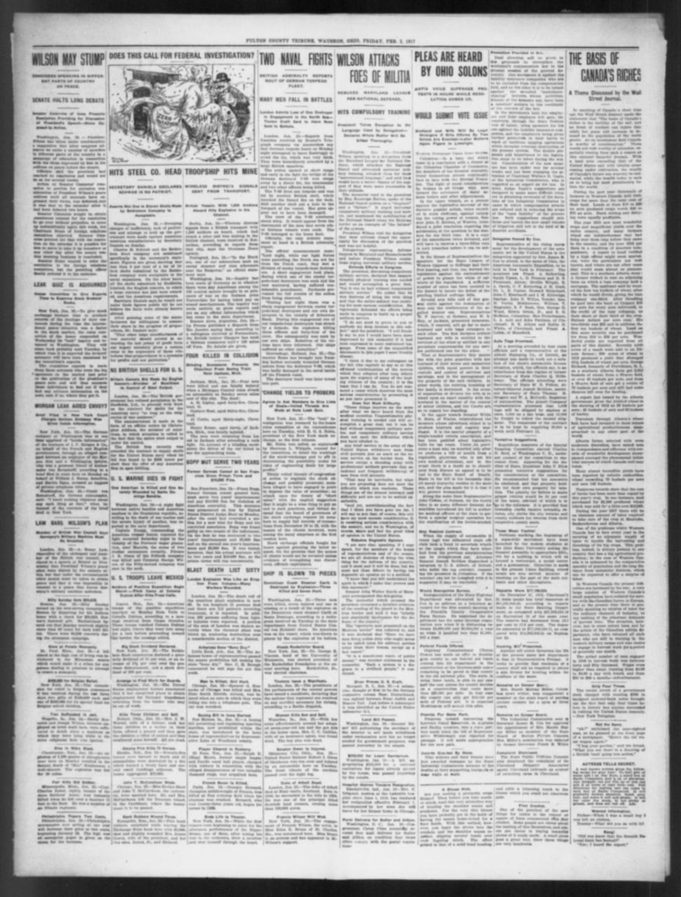

The American OccupationLa ocupación estadounidense
The eraLa era
The Landing and the ProclamationEl desembarco y la proclama
In 1916 the United States Marines landed, and American coverage of the eight years that followed was largely written from inside the occupation's own frame. Its founding document is in these pages: Captain H. S. Knapp's proclamation of November 30, 1916, declaring military rule, assuring Dominicans that the United States had no intention of destroying the republic's independence, leaving Dominican laws and courts in force under military supervision, and establishing censorship of newspapers, cables and telegraph lines in the same breath.
En 1916 desembarcaron los marines de Estados Unidos, y la cobertura estadounidense de los ocho años siguientes se escribió en gran parte desde dentro del marco de la propia ocupación. Su documento fundador está en estas páginas: la proclama del capitán H. S. Knapp del 30 de noviembre de 1916, que declaraba el gobierno militar, aseguraba a los dominicanos que Estados Unidos no tenía intención de destruir la independencia de la república, dejaba vigentes las leyes y los tribunales dominicanos bajo supervisión militar y establecía, en la misma respiración, la censura de periódicos, cables y líneas telegráficas.
Progress, Measured in Roads and RevenueEl progreso, medido en carreteras e ingresos
Progress was measured in miles of road, dollars of customs revenue and sanitation campaigns; the military government's reports became the newspapers' facts. Snowden's report put figures to it: internal revenue risen from $700,000 to some $3,500,000 a year. The items record the frame at work: highways improved, sewers planned for nine towns in the Puerto Plata district, a school of commerce opened in Santiago, six hundred rural schools opened under Marine protection.
El progreso se medía en millas de carretera, dólares de ingreso aduanero y campañas de saneamiento; los informes del gobierno militar se convirtieron en los hechos de los periódicos. El informe de Snowden lo puso en cifras: el ingreso interno había subido de 700.000 dólares a unos 3.500.000 al año. Las notas registran el marco en acción: carreteras mejoradas, alcantarillado planeado para nueve pueblos del distrito de Puerto Plata, una escuela de comercio abierta en Santiago, seiscientas escuelas rurales abiertas bajo protección de los marines.
Resistance, Censorship, and the Dominican AnswerResistencia, censura y la respuesta dominicana
The fighting was filed in the occupation's vocabulary: a night fight near the Porvenir sugar plantation in which Private Olson was killed is reported as a fight with 'native bandits,' the label the papers gave the gavilleros who resisted in the east. Dominican experience ran the other way: a country governed by foreign officers without its consent, its press censored, its people disarmed, its politics suspended. That experience reached American readers too, in Dominican protests carried in these pages, in charges of atrocities laid before a Senate committee, and in reports of a censorship strict enough to destroy Marines' own letters home.
Los combates se archivaban en el vocabulario de la ocupación: una pelea nocturna cerca del ingenio Porvenir en la que murió el soldado Olson se informa como una pelea con «bandidos nativos», la etiqueta que los periódicos daban a los gavilleros que resistían en el este. La experiencia dominicana corrió en sentido contrario: un país gobernado por oficiales extranjeros sin su consentimiento, con su prensa censurada, su gente desarmada y su política suspendida. Esa experiencia también llegó a los lectores estadounidenses, en las protestas dominicanas recogidas en estas páginas, en las denuncias de atrocidades presentadas ante un comité del Senado y en los informes de una censura tan estricta que destruía las cartas de los propios marines a sus casas.
The Long Argument Over WithdrawalLa larga disputa por la retirada
The end was argued over for years before it came: withdrawal announced in December 1920, then conditioned in 1921 on guarantees for the occupation's loans, then negotiated under an open Senate inquiry. Evacuation began in October 1922 with the provisional government of Juan Bautista Vicini Burgos, and the occupation withdrew in 1924, leaving behind the national constabulary it had built, and the officer already rising through its ranks who would rule the country for the next three decades.
El final se disputó durante años antes de llegar: la retirada anunciada en diciembre de 1920, condicionada luego en 1921 a garantías para los préstamos de la ocupación, y negociada con una investigación del Senado abierta. La evacuación comenzó en octubre de 1922 con el gobierno provisional de Juan Bautista Vicini Burgos, y la ocupación se retiró en 1924, dejando tras sí la guardia nacional que había construido y al oficial que ya ascendía en sus filas y gobernaría el país durante las tres décadas siguientes.
MomentsMomentos
The Landing: America IntervenesEl desembarco: Estados Unidos interviene
In May 1916 the quarrel between Washington and President Jiménes became an occupation. Congress impeached him; he resigned to forestall the intervention he feared; and when the fighting went on, American marines took the capital and began distributing themselves across the republic, while Dominicans were already petitioning for their withdrawal.
En mayo de 1916, la disputa entre Washington y el presidente Jiménes se convirtió en ocupación. El Congreso lo sometió a juicio político; renunció para evitar la intervención que temía; y cuando la lucha continuó, los marines estadounidenses tomaron la capital y comenzaron a distribuirse por la república, mientras los dominicanos ya pedían su retirada.
The impeachment crisisLa crisis del juicio político
Coverage in The Birmingham Age-Herald recounts that General Juan I. JiminesLa cobertura en The Birmingham Age-Herald relata que el general Juan I. Jiménez
A news brief from Santo Domingo in the Grand Forks Daily Herald reportsUna breve noticia desde Santo Domingo en el Grand Forks Daily Herald informa
Dispatches from Washington and Santo Domingo published in the Daily Kennebec Journal reportDespachos desde Washington y Santo Domingo publicados en el Daily Kennebec Journal informan
A short wire brief from Santo Domingo in The Hattiesburg News reportsUn breve despacho cablegráfico desde Santo Domingo en The Hattiesburg News informa
General Juan I. Jimenez, President of the Dominican RepublicEl general Juan I. Jiménez, presidente de la República Dominicana
A Washington report in The Topeka State Journal states that Rear AdmiralUn informe de Washington en The Topeka State Journal afirma que el contralmirante
Dispatches from Santo Domingo and Washington published in The Laramie Republican reportDespachos desde Santo Domingo y Washington publicados en The Laramie Republican informan
According to a Santo Domingo dispatch in the River Falls JournalSegún un despacho desde Santo Domingo en el River Falls Journal
A Santo Domingo dispatch to the Evening times-Republican reportsUn despacho desde Santo Domingo dirigido al Evening times-Republican informa
A brief report from Santo Domingo published in the Dakota farmers'Un breve informe desde Santo Domingo publicado en el Dakota farmers'
According to a Santo Domingo dispatch in The Barre Daily TimesSegún un despacho desde Santo Domingo en The Barre Daily Times
WASHINGTON, May B. -IUar Admiral Caperton, commanding tho American naval forceiWASHINGTON, 8 de mayo. -El contralmirante Caperton, comandante de las fuerzas navales americanas
Republic's President Impeached.El presidente de la república, destituido.
BLACK REPUBLIC AGAIN FACING A REBELLION CRISISLA REPÚBLICA NEGRA ENFRENTA DE NUEVO UNA CRISIS DE REBELIÓN
Dispatches to the Ottumwa Tri-Weekly Courier from Santo Domingo stateLos despachos dirigidos al Ottumwa Tri-Weekly Courier desde Santo Domingo afirman
Situation in Santo Domingo Is GraveLa situación en Santo Domingo es grave
Jiménes resignsJiménes renuncia
The Daily Journal reports on Dominican mediation efforts alongsideThe Daily Journal informa sobre los esfuerzos dominicanos de mediación junto a
American Marines in Santo Domingo. Force Landed From Warship to Meet Serious Situation in Black RepublicMarines Americanos en Santo Domingo. Fuerza Desembarcada de un Buque de Guerra ante la Grave Situación en la República Negra
Juan Jimines of Santo Domingo Has ResignedJuan Jimines de Santo Domingo ha renunciado
American Marines, Fully Equipped, Landed on Outskirts of Santo DomingoInfantes de marina estadounidenses, totalmente equipados, desembarcan en las afueras de Santo Domingo
At the navy-yard It was learned that five other destroyers, the FlusserEn el arsenal naval se supo que otros cinco destructores, los
The Birmingham Age-Herald reports that President Juan Jiminez resignedThe Birmingham Age-Herald informa que el presidente Juan Jiménez renunció
An Associated Press dispatch from Santo Domingo in The Montgomery Advertiser reportsUn despacho de la Associated Press desde Santo Domingo en The Montgomery Advertiser informa
Santo Domingo QuietCalma en Santo Domingo
U. S. Marines Landed.Desembarcan marines de Estados Unidos.
U. S. Marines Landed.Desembarco de marines de EE. UU.
The capital takenLa capital tomada
Santo Domingo Rebels Heed a U. S. WarningLos rebeldes de Santo Domingo acatan una advertencia de Estados Unidos
A Santo Domingo dispatch in The Birmingham Age-Herald reportsUn despacho desde Santo Domingo en The Birmingham Age-Herald informa
A Santo Domingo dispatch in The Parma Herald reports that rebelUn despacho desde Santo Domingo en The Parma Herald informa que los rebeldes
The occupation beginsComienza la ocupación
WANT TROOPS WITHDRAWN. Dominican Official Comes to United States to Make Protest.PIDEN LA RETIRADA DE LAS TROPAS. Un funcionario dominicano viene a Estados Unidos a protestar
A Washington dispatch in The Laramie Republican reports that unsettledUn despacho de Washington en The Laramie Republican informa que la inestabilidad
More Marines Sent to Santo DomingoMás marines enviados a Santo Domingo
A Santo Domingo dispatch to The Birmingham Age-Herald reportsUn despacho desde Santo Domingo dirigido a The Birmingham Age-Herald informa
Americans Act as Cops.Los estadounidenses actúan como policías.
MARINES ARRIVE.Llegan los marines.
Policing San Domingo.La vigilancia policial de San Domingo.
POLICING OF THE REPUBLIC State Department Will Not Recognize Newly-ElectedLA VIGILANCIA DE LA REPÚBLICA El Departamento de Estado no reconocerá al recién elegido
PlatesLáminas

U. S. Marine Dies in Fight
Key articlesArtículos clave
Santo Domingo Military Rule Gives Assurances of Honest Intentions to Assist RepublicEl gobierno militar de Santo Domingo da garantías de intenciones honestas de ayudar a la república
The proclamation gives assurance that the United States has no intention of destroying the republic's independence, but desires to help establish internal order, leaving Dominican laws and courts in force and legal administration under duly authorized Dominican officials supervised by military authorities, while offending members of the American force are to be judged by military officials. Capt. Knapp requested the inhabitants' cooperation in restoring order, established censorship of newspapers, cables, and telegraph lines, and promised that budget payments suspended in August would soon be made, while quiet prevailed in the city the previous night.
Un despacho fechado el 30 de noviembre en Santo Domingo, República Dominicana, informa que el capitán H. S. Knapp, comandante de las fuerzas de los Estados Unidos allí, emitió una proclama de gobierno militar declarando en nombre del gobierno estadounidense que la república ha sido ocupada por fuerzas militares. La proclama asegura que los Estados Unidos no tienen intención de destruir la independencia de la república, sino que desean ayudar al país a establecer el orden interno, manteniendo vigentes las leyes y los tribunales dominicanos y dejando la administración legal en manos de los funcionarios dominicanos debidamente autorizados bajo el control y la supervisión de las autoridades militares, mientras que los miembros infractores de la fuerza estadounidense serán juzgados por oficiales militares. El capitán Knapp solicitó la cooperación de los habitantes para restablecer el orden, estableció la censura de periódicos, cables y líneas telegráficas, y prometió que pronto se efectuaría el pago del presupuesto suspendido en agosto, mientras la tranquilidad reinaba en la ciudad la noche anterior.
U. S. Marines to Leave Santo Domingo SoonLos marines de EE. UU. saldrán pronto de Santo Domingo
Rear Admiral Samuel S. Robinson, military governor of the Dominican Republic, provided for the installation of the new government in a proclamation, and the actual withdrawal of United States Marines is scheduled to begin right after President Burgos formally ratifies the American plan for the new government.
The Washington Times informa que la evacuación de las fuerzas militares estadounidenses de Santo Domingo comenzó con el establecimiento del gobierno provisional encabezado por Juan Batista Vicini Burgos. El contralmirante Samuel S. Robinson, gobernador militar de la República Dominicana, dispuso la instalación del nuevo gobierno mediante una proclama, y está previsto que el retiro efectivo de los infantes de marina de los Estados Unidos comience inmediatamente después de que el presidente Burgos ratifique formalmente el plan estadounidense para el nuevo gobierno.
U. S. Marine Dies in FightMarine de los EE. UU. muere en combate
A night fight between native bandits and American marines in the Dominican Republic was reported to the Navy Department, according to a Washington dispatch of January 24. Captain Knapp, commanding the American cruiser forces, reported the fight occurred Saturday night near the Porvenir sugar plantation, near Macoris, the scene of two similar encounters recently. Private J. H. Olson of the Fiftieth Company was killed, and Corporal George Wilson of the Fifty-second Company was shot in the neck.
Según un despacho de Washington del 24 de enero, se informó al Departamento de Marina de un combate nocturno entre bandoleros nativos e infantes de marina estadounidenses en la República Dominicana. El capitán Knapp, al mando de las fuerzas de cruceros estadounidenses, reportó que el combate ocurrió la noche del sábado cerca del ingenio azucarero Porvenir, en las proximidades de Macorís, escenario de dos encuentros similares recientes. El soldado J. H. Olson, de la Compañía Cincuenta, murió, y el cabo George Wilson, de la Compañía Cincuenta y Dos, fue herido de bala en el cuello.
ErasEras · The era's articlesLos artículos de la era · On the timelineEn la cronología